FASE 1. MOTIVAR
Actividad 1. Alerta MIB: señales desde el espacio
Mensaje dirigido al alumnado
AGENTE: se ha detectado actividad extraterrestre en distintos puntos del planeta. Los radares están recibiendo señales que describen movimientos, cambios de temperatura, distancias, velocidades y niveles de energía.
Los datos no están organizados y algunas civilizaciones están utilizando modelos matemáticos para confundirnos.
Los MIB necesitan agentes capaces de interpretar gráficas y relaciones entre magnitudes. Vuestra misión será aprender a reconocer y analizar funciones para descifrar las señales.
No os preocupéis: E.T. ha decidido colaborar con nosotros y nos ayudará a comprender los primeros mensajes.
Preguntas para despertar el interés
- ¿Cómo podríamos representar la distancia recorrida por una nave espacial en función del tiempo?
- ¿Podríamos saber cuándo una nave está acelerando o frenando observando una gráfica?
- ¿Cómo representaríamos la temperatura de un planeta durante un día?
- ¿Qué información nos proporciona una gráfica que no vemos directamente en una tabla de datos?
No se busca todavía resolver estas cuestiones, sino despertar la curiosidad y presentar la utilidad de las funciones.
FASE 2. ACTIVAR
Actividad 2. El entrenamiento de los agentes
Antes de comenzar la investigación, los MIB necesitan comprobar qué conocimientos matemáticos conserva el equipo. Y para que esta comprobación sea imparcial le han pedido ayuda a los visitantes (de la serie V):
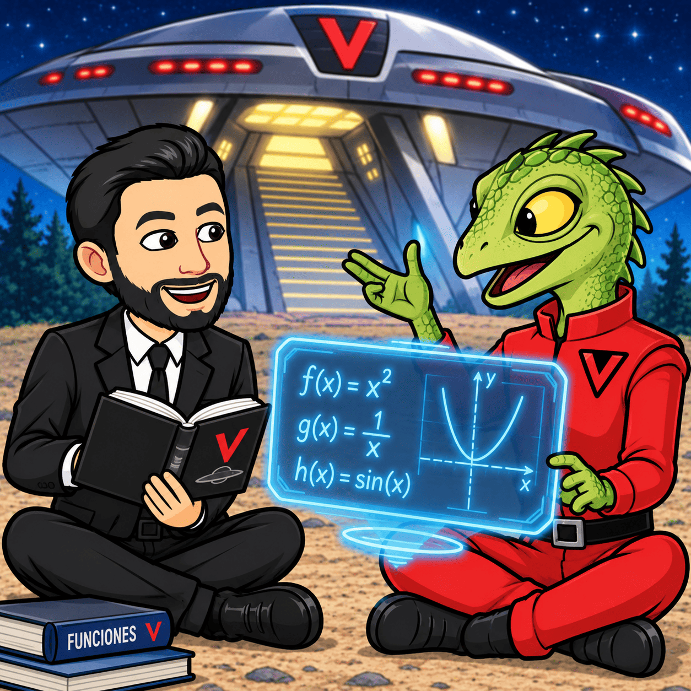
Responde individualmente:
1. Operaciones numéricas
Calcula:
a) \(3+5\cdot2\)
b) \(\dfrac{2}{3}+\dfrac{1}{6}\)
c) \(\dfrac{3}{4}\cdot\dfrac{2}{5}\)
d) \(\dfrac{2}{3}:\dfrac{4}{5}\)
2. Coordenadas cartesianas
Indica en qué cuadrante se encuentran los puntos:
- A(2,3)
- B(-2,4)
- C(-3,-1)
- D(4,-2)
3. Interpretación de relaciones
Una nave recorre 120 km en 2 horas a velocidad constante.
a) ¿Cuántos kilómetros recorre en una hora?
b) ¿Cuántos kilómetros recorre en 4 horas?
c) ¿Qué operación permite calcular la distancia recorrida?
4. Lectura de una gráfica
Se presenta la siguiente gráfica de distancia frente a tiempo y pregunta:
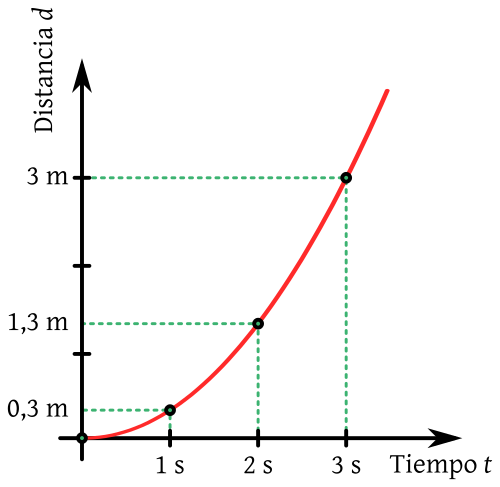
- ¿Qué representa cada eje?
- ¿En qué momento se encuentra el objeto más lejos?
- ¿En qué intervalo permanece parado?
- ¿Cuándo aumenta la distancia?
Estas preguntas permiten comprobar si el alumnado sabe interpretar información gráfica.
Soluciones de actividad 2. El entrenamiento de los agentes
1. Operaciones numéricas
a) \(3+10=13\).
b) \(\dfrac{4}{6}+\dfrac{1}{6}=\dfrac{5}{6}\).
c) \(\dfrac{6}{20}=\dfrac{3}{10}\).
d) \(\dfrac{2}{3}\cdot\dfrac{5}{4}=\dfrac{10}{12}=\dfrac{5}{6}\).
2. Coordenadas cartesianas
- A: primer cuadrante.
- B: segundo cuadrante.
- C: tercer cuadrante.
- D: cuarto cuadrante.
3. Interpretación de relaciones
La velocidad es:
\( v=\dfrac{120}{2}=60\text{ km/h} \)
En 4 horas recorrerá:
\( d=60\cdot4=240\text{ km} \)
La relación entre distancia y tiempo es \(d=60t\).
FASE 3. EXPLORAR
Actividad 3. El mensaje de E.T.: ¿qué es una función?
E.T. ha conseguido enviar un mensaje matemático a los MIB. En él aparece una relación entre el tiempo que permanece encendida una baliza y la energía que consume.
| Tiempo (horas) | Energía consumida (unidades) |
| 0 | 0 |
| 1 | 5 |
| 2 | 10 |
| 3 | 15 |
| 4 | 20 |
Cuestiones
- ¿Qué magnitud depende de la otra?
- ¿Cuánta energía consume la baliza por hora?
- ¿Qué energía consumirá en 6 horas?
- Escribe una expresión matemática que relacione ambas magnitudes.
- ¿Podría la baliza consumir dos cantidades diferentes de energía en el mismo instante?
Conclusión: una función establece una relación en la que a cada valor de entrada le corresponde un único valor de salida.
Actividad 4. Los radares de Independence Day: tres formas de representar una función
Los radares de los MIB han detectado una nave que se desplaza a velocidad constante. Su posición viene dada por:
\( d(t)=100t \)
donde \(t\) representa el tiempo en horas y \(d(t)\) la distancia en kilómetros.
Cuestiones
- Completa una tabla de valores para \(t=0,1,2,3,4\).
- Representa los datos en unos ejes cartesianos.
- Describe qué forma tiene la gráfica.
- ¿Qué representa el punto (2,200)?
- ¿Qué ventajas tiene cada representación: fórmula, tabla y gráfica?
Actividad 5. El informe de los visitantes: dominio y recorrido
Los visitantes de V han enviado un informe sobre la temperatura de una cámara de almacenamiento. La función que describe el proceso es:
\( T(t)=20+3t \)
donde \(t\) es el tiempo en horas y \(T(t)\) la temperatura en grados.
El experimento comienza en \(t=0\) y termina en \(t=5\).
Cuestiones
- ¿Qué valores puede tomar el tiempo?
- ¿Qué temperatura tiene la cámara al comenzar?
- ¿Qué temperatura alcanza al finalizar?
- ¿Cuál es el dominio de la función en este experimento?
- ¿Cuál es el recorrido?
Conclusión: el dominio recoge los valores que puede tomar la variable independiente y el recorrido los valores que alcanza la función.
Actividad 6. La nave de Predator: ¿cuándo aumenta y cuándo disminuye?
Un sensor de los MIB registra la energía de una nave durante una maniobra. La gráfica muestra que la energía aumenta durante los primeros minutos, alcanza un máximo y después disminuye.
Cuestiones
- ¿Qué significa que una función sea creciente?
- ¿Qué significa que sea decreciente?
- ¿Qué representa el máximo de una función en este contexto?
- ¿Puede una función ser primero creciente y después decreciente?
Conclusión: estudiar la monotonía permite describir cómo evoluciona una magnitud.
Actividad 7. El mapa de señales de Mars Attacks: ¿todas las funciones son iguales?
Los marcianos han enviado cuatro señales matemáticas:
\( f(x)=2x+1 \)
\( g(x)=x^2 \)
\( h(x)=\frac{1}{x} \)
\( p(x)=\sqrt{x} \)
Cuestiones
- ¿Qué diferencias observas entre las expresiones?
- ¿Cuál contiene una raíz?
- ¿Cuál contiene una división?
- ¿Cuál tiene la variable elevada al cuadrado?
- ¿Crees que todas tendrán la misma gráfica?
Cierre de la exploración
El equipo ya ha descubierto que las funciones permiten describir fenómenos, representar datos y estudiar cambios. Ahora comienza la fase de formación matemática: los agentes deberán dominar las herramientas necesarias para analizar cualquier señal extraterrestre.
Resolución de actividad 3. El mensaje de E.T.: ¿qué es una función?
- La energía consumida depende del tiempo.
- Consume 5 unidades por hora.
- En 6 horas consumirá \(5\cdot6=30\) unidades.
- La expresión es:
- \( E(t)=5t \)
- No. A cada valor del tiempo le corresponde un único valor de energía. Por tanto, la relación es una función.
Resolución de actividad 4. Los radares de Independence Day: tres formas de representar una función
1. La tabla queda así:
| Tiempo (h) | Distancia (km) |
| 0 | 0 |
| 1 | 100 |
| 2 | 200 |
| 3 | 300 |
| 4 | 400 |
2. La gráfica es una recta que pasa por el origen y es creciente.
3. El punto (2,200) significa que después de dos horas la nave ha recorrido 200 km.
4. Las tres representaciones permiten estudiar la misma función:
- La fórmula permite calcular cualquier valor.
- La tabla muestra valores concretos.
- La gráfica permite visualizar el comportamiento.
Resolución de actividad 5. El informe de los visitantes: dominio y recorrido
- El tiempo puede tomar valores entre 0 y 5.
- \(T(0)=20\).
- \(T(5)=20+3\cdot5=35\).
- El dominio es:
- \[ D_T=[0,5] \]
- La temperatura toma valores desde 20 hasta 35:
- \[ \operatorname{Rec}(T)=[20,35] \]
Resolución de actividad 6. La nave de Predator: ¿cuándo aumenta y cuándo disminuye?
- Es creciente cuando, al aumentar la variable independiente, también aumenta el valor de la función.
- Es decreciente cuando, al aumentar la variable independiente, disminuye el valor de la función.
- El máximo representa el mayor nivel de energía registrado.
- Sí. Una función puede presentar diferentes intervalos de crecimiento y decrecimiento.
Resolución actividad 7. El mapa de señales de Mars Attacks: ¿todas las funciones son iguales?
- \(f(x)=2x+1\) es una función afín.
- \(g(x)=x^2\) es una función cuadrática.
- \(h(x)=1/x\) es una función racional.
- \(p(x)=\sqrt{x}\) es una función irracional.
- No todas tienen la misma gráfica ni las mismas propiedades. Cada familia de funciones presenta características propias.
FASE 4. ESTRUCTURAR
En esta fase se desarrollarán los contenidos del tema mediante una secuencia de ejercicios ordenados de menor a mayor dificultad. Cada actividad incluye su resolución para que como alumnos/as podáis comprobar el procedimiento y comprender los conceptos.
Bloque 1. Concepto y representación de funciones
Actividad 8. Identificación de funciones
Indica cuáles de las siguientes relaciones son funciones:
a) A cada alumno se le asigna su fecha de nacimiento.
b) A cada número real se le asignan sus dos cuadrados: \(x^2\) y \(-x^2\).
c) A cada hora del día se le asigna la temperatura registrada en una ciudad.
Resolución
a) Sí es una función: cada alumno tiene una única fecha de nacimiento.
b) No es una función: a un mismo número se le asignan dos valores distintos.
c) Sí es una función: a cada hora le corresponde una única temperatura registrada.
Actividad 9. Obtener una tabla de valores
Una nave sigue la función:
\( f(x)=2x-3 \)
Completa la tabla para \(x=-2,-1,0,1,2\).
Resolución
| x | f(x) |
| -2 | -7 |
| -1 | -5 |
| 0 | -3 |
| 1 | -1 |
| 2 | 1 |
Se sustituye cada valor de \(x\) en la expresión.
Por ejemplo:
\( f(2)=2\cdot2-3=1 \)
Actividad 10. Interpretación de una gráfica
Un vehículo extraterrestre se aleja de una base. Su distancia viene representada por una recta creciente.
Explica qué significa que:
a) La gráfica pase por el origen.
b) La gráfica sea creciente.
c) La gráfica sea una recta.
Resolución
a) En el instante inicial, la distancia es cero.
b) La distancia aumenta con el tiempo.
c) Si la recta tiene pendiente constante, la velocidad es constante.
Bloque 2. Características de las funciones
Actividad 11. Dominio de una función
Calcula el dominio de:
\( f(x)=\dfrac{3}{x-2} \)
Resolución
El denominador no puede ser cero:
\( x-2\neq0 \)
\( x\neq2 \)
Por tanto:
\( D_f=\mathbb R-\{2\} \)
Actividad 12. Dominio de una función con raíz
Calcula el dominio de:
\( f(x)=\sqrt{x-4} \)
Resolución
El radicando debe ser mayor o igual que cero:
\( x-4\geq0 \)
\( x\geq4 \)
Por tanto:
\( D_f=[4,+\infty) \)
Actividad 13. Cortes con los ejes
Calcula los puntos de corte de:
\( f(x)=2x-6 \)
Resolución
Corte con el eje X: hacemos \(f(x)=0\).
\( 2x-6=0\Rightarrow x=3 \)
Punto: (3,0).
Corte con el eje Y: hacemos \(x=0\).
\( f(0)=2\cdot0-6=-6 \)
Punto: (0,-6).
Actividad 14. Continuidad
Estudia la continuidad de:
\( f(x)=\frac{1}{x-3} \)
Resolución
Es una función racional, continua en todos los puntos de su dominio.
Como el denominador se anula en \(x=3\), presenta una discontinuidad en ese punto.
\( D_f=\mathbb R-\{3\} \)
Actividad 15. Crecimiento y decrecimiento
Estudia la monotonía de:
\( f(x)=x^2 \)
Resolución
La parábola decrece hasta llegar al vértice y después crece.
-
- Decreciente en \((-\infty,0)\).
- Creciente en \((0,+\infty)\).
- Decreciente en \((-\infty,0)\).
Actividad 16. Máximos y mínimos
Estudia los extremos de:
\( f(x)=(x-2)^2+1 \)
Resolución
La función es una parábola abierta hacia arriba.
Su vértice es (2,1), por lo que presenta un mínimo absoluto de valor 1 en \(x=2\).
No tiene máximo absoluto.
Actividad 17. Simetría
Estudia si las funciones siguientes son pares, impares o ninguna de las dos:
a) \(f(x)=x^2\)
b) \(g(x)=x^3\)
c) \(h(x)=x+1\)
Resolución
Una función es par si \(f(-x)=f(x)\), e impar si \(f(-x)=-f(x)\).
a) \(f(-x)=(-x)^2=x^2\). Es par.
b) \(g(-x)=(-x)^3=-x^3\). Es impar.
c) \(h(-x)=-x+1\). No es par ni impar.
Actividad 18. Periodicidad
Indica si las funciones siguientes son periódicas:
a) \(f(x)=\text{sen} (x)\)
b) \(g(x)=x^2\)
Resolución
a) Es periódica, con periodo \(2\pi\).
b) No es periódica.
Actividad 19. Función inversa
Estudia si la función:
\( f(x)=2x+4 \)
tiene inversa y calcúlala.
Resolución
Es una función afín con pendiente distinta de cero, por lo que es inyectiva y tiene inversa si se considera como función de \(\mathbb R\) en \(\mathbb R\).
Partimos de:
\( y=2x+4 \)
Intercambiamos \(x\) e \(y\):
\( x=2y+4 \)
Despejamos:
\( y=\frac{x-4}{2} \)
Por tanto:
\( f^{-1}(x)=\frac{x-4}{2} \)
Actividad 20. Tasa de variación media
Una nave se desplaza según:
\( f(x)=x^2+2 \)
Calcula la TVM entre \(x=1\) y \(x=3\).
Resolución
Calculamos los valores:
\( f(1)=1^2+2=3 \)
\( f(3)=3^2+2=11 \)
Aplicamos la fórmula:
\( TVM=\frac{f(3)-f(1)}{3-1} \)
\( TVM=\frac{11-3}{2}=4 \)
La tasa de variación media es 4.
Bloque 3. Familias de funciones
Actividad 21. Función afín (función polinómica)
Una nave de reconocimiento se encuentra inicialmente a 50 km de una base y se aleja a 20 km por minuto.
Su distancia viene dada por:
\( d(t)=20t+50 \)
Cuestiones
- ¿Cuál es la distancia inicial?
- ¿A qué distancia estará después de 5 minutos?
- ¿Es creciente o decreciente?
- ¿Qué representa la pendiente?
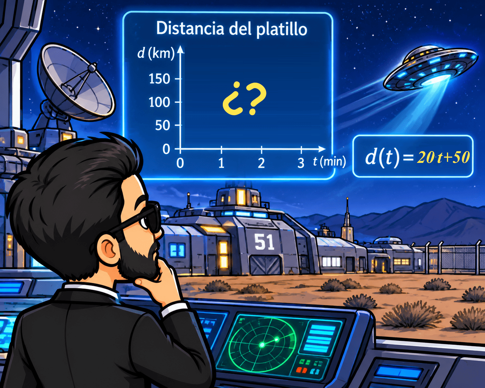
Resolución
- \(d(0)=50\) km.
- \(d(5)=20\cdot5+50=150\) km.
- Es creciente, porque su pendiente es positiva.
- La pendiente representa la velocidad: 20 km/min.
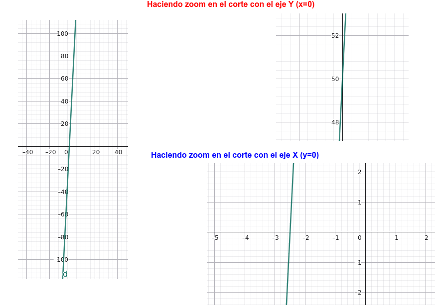
Actividad 22. Función cuadrática (función polinómica)
La trayectoria de una cápsula viene representada por:
\( h(t)=-t^2+4t \)
Cuestiones
- Calcula los cortes con el eje X.
- Calcula el vértice.
- Indica si tiene máximo o mínimo.
- Representa la función.
Resolución
1. Cortes con los ejes:
Cortes con el eje X:
\( -t^2+4t=0 \)
\( t(-t+4)=0 \)
\( t=0,\quad t=4 \)
Puntos: (0,0) y (4,0).
El punto (0,0) es también el corte con el eje Y.
2. Vértice:
\( t_v=\dfrac{-b}{2a}=\dfrac{-4}{-2}=2 \)
\( h(2)=-2^2+4\cdot2=4 \)
Vértice: (2,4).
3. Como la parábola está abierta hacia abajo, tiene un máximo relativo y absoluto de valor 4.
4. Representación gráfica:
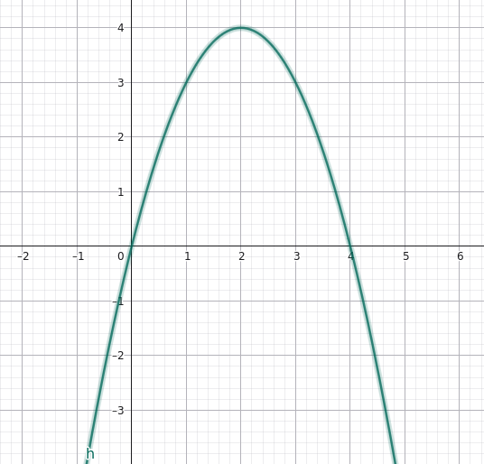
Actividad 23. Dominio y asíntotas de una función racional
Una señal extraterrestre sigue la función:
\( f(x)=\frac{x+1}{x-2} \)
Cuestiones
- Calcula el dominio.
- Calcula los cortes con los ejes.
- Identifica sus asíntotas.
- Determina el recorrido.
Resolución
1. Dominio: el denominador no puede ser cero.
\( x-2\neq0\Rightarrow x\neq2 \)
\( D_f=\mathbb R-\{2\} \)
2. Cortes con los ejes:
Corte con el eje X:
\( x+1=0\Rightarrow x=-1 \)
Punto: (-1,0).
Corte con el eje Y:
\( f(0)=\frac{1}{-2}=-\frac12 \)
Punto: \((0,-1/2)\).
3. Asíntotas:
Al realizar la división:
\(\dfrac{(x+1)}{(x-2)}=1+\dfrac{3}{x-2}\)
-
- Vertical: \(x=2\).
- Este valor viene de que el denominador nunca puede ser cero.
- Este valor viene de que el denominador nunca puede ser cero.
- Horizontal: \(y=1\).
- Este valor viene de quedarnos con el cociente de la división polinomial (y euclídea) de los dos polinomios que componen la función racional.
- Este valor viene de quedarnos con el cociente de la división polinomial (y euclídea) de los dos polinomios que componen la función racional.
- Vertical: \(x=2\).
3. Recorrido:
La función no puede tomar el valor 1:
\( \operatorname{Rec}(f)=\mathbb R-\{1\} \)
Representación gráfica:
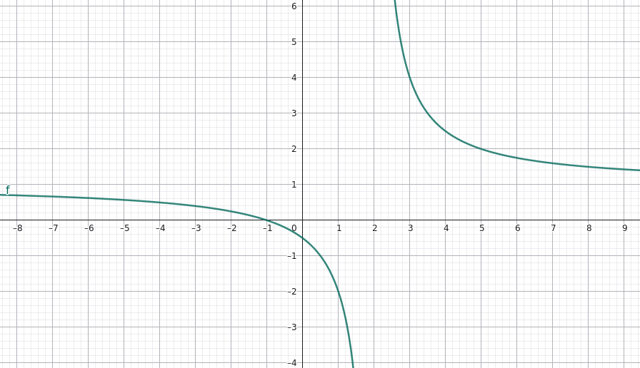
Actividad 24. Dominio de una raíz cuadrada (función irracional)
Una señal de energía se representa mediante:
\( f(x)=\sqrt{x-2} \)
Cuestiones
- Calcula el dominio.
- Calcula el recorrido.
- ¿Es creciente o decreciente?
- Calcula \(f(2)\), \(f(6)\) y \(f(11)\).
Resolución
1. Dominio:
\( x-2\geq0\Rightarrow x\geq2 \)
\( D_f=[2,+\infty) \)
2. Recorrido:
La raíz cuadrada nunca es negativa:
\( \operatorname{Rec}(f)=[0,+\infty) \)
3. Es creciente en todo su dominio.
4. Cálculo de unos valores concretos:
\( f(2)=0,\quad f(6)=2,\quad f(11)=3 \)
Representación gráfica:
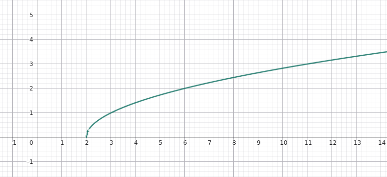
Actividad 25. Análisis completo de la raíz cuadrada (función irracional)
Estudia la función:
\( f(x)=\sqrt{x} \)
Resolución
- Dominio: \([0,+\infty)\).
- Recorrido: \([0,+\infty)\).
- Corte con ambos ejes: (0,0).
- Continuidad: continua en todo su dominio.
- Monotonía: creciente.
- Extremos: mínimo absoluto en (0,0). No tiene máximo.
- Simetría: no es par ni impar.
- Periodicidad: no es periódica.
- Inversa: \(f^{-1}(x)=x^2\), con \(x\geq0\).
- Asíntotas: no tiene.
- TVM entre 0 y 4:
\( f(0)=0,\qquad f(4)=2 \)
\( TVM=\frac{2-0}{4-0}=\frac12 \)
- Representación gráfica:
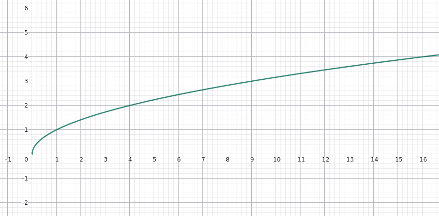
Actividad 26. Raíz cúbica (función irracional)
Estudia el dominio y el recorrido de:
\( f(x)=\sqrt[3]{x} \)
Resolución
Las raíces de índice impar admiten radicandos positivos, negativos y cero.
Por tanto:
\( D_f=\mathbb R \)
\( \operatorname{Rec}(f)=\mathbb R \)
La función es continua y creciente en todo su dominio. Pasa por el origen y es impar.
Representación gráfica:
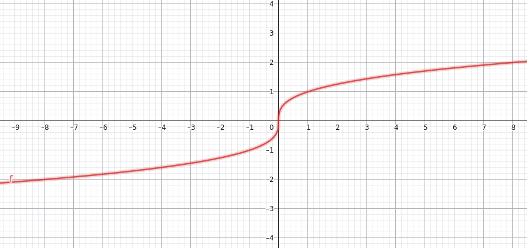
Actividad 27. Crecimiento exponencial (función exponencial)
Una población de microorganismos extraterrestres se duplica cada hora. Si inicialmente hay 100 microorganismos, su evolución se representa mediante:
\( P(t)=100\cdot2^t \)
Cuestiones
- ¿Cuántos hay inicialmente?
- ¿Cuántos habrá después de 3 horas?
- ¿Es creciente o decreciente?
- ¿Qué tipo de función es?
Resolución
- \(P(0)=100\).
- \(P(3)=100\cdot2^3=800\).
- Es creciente, porque la base 2 es mayor que 1.
- Es una función exponencial.
Representación gráfica:
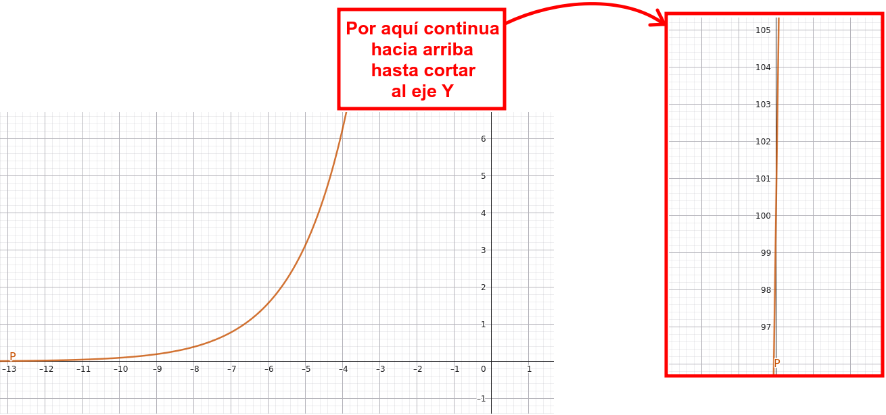
Actividad 28. Exponencial decreciente (función exponencial)
La energía de una nave se reduce siguiendo:
\( E(t)=\left(\dfrac34\right)^t \)
Cuestiones
- Calcula \(E(0)\), \(E(1)\) y \(E(2)\).
- Indica su dominio y recorrido.
- ¿Es creciente o decreciente?
- ¿Qué asíntota presenta?
Resolución
- \[ E(0)=1,\quad E(1)=\frac34,\quad E(2)=\frac9{16} \]
- Dominio: \(\mathbb R\).
- Recorrido: \((0,+\infty)\).
- Es decreciente porque \(0<3/4<1\).
- Asíntota horizontal: \(y=0\).
Representación gráfica:
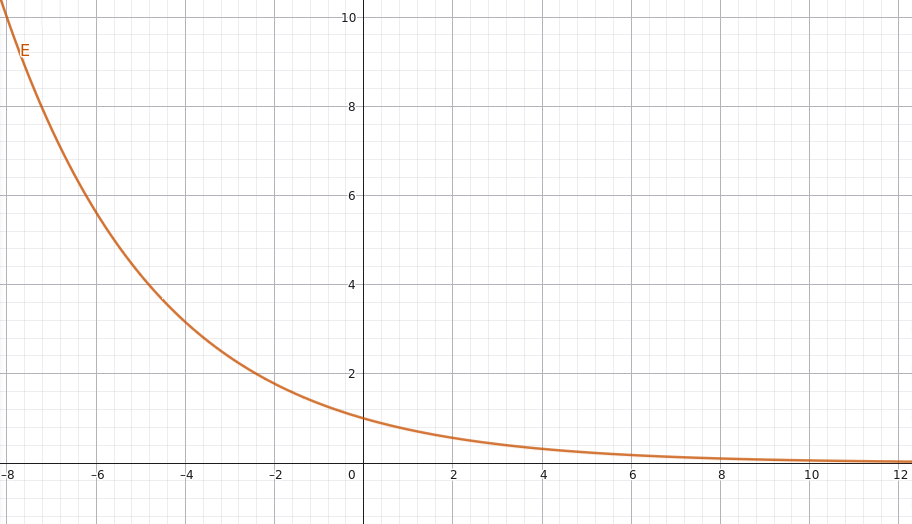
Actividad 29. Señal logarítmica (función logarítmica)
Una señal se describe mediante:
\( f(x)=\log_2 x \)
Cuestiones
- Calcula \(f(1)\), \(f(2)\), \(f(4)\) y \(f(8)\).
- Indica su dominio y recorrido.
- ¿Es creciente o decreciente?
- ¿Qué función es su inversa?
Resolución
- \[ f(1)=0,\quad f(2)=1,\quad f(4)=2,\quad f(8)=3 \]
- Dominio: \((0,+\infty)\).
- Recorrido: \(\mathbb R\).
- Es creciente porque la base es mayor que 1.
- Su inversa es \(f^{-1}(x)=2^x\).
Representación gráfica:
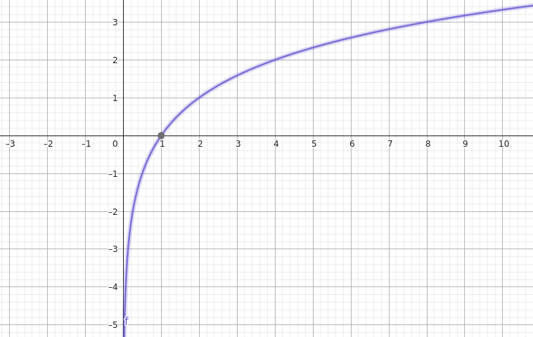
Actividad 30. Señal periódica (función trigonométrica seno)
Un radar registra una señal que oscila siguiendo:
\( f(x)=\text{sen} (x) \)
Cuestiones
- Indica su dominio.
- Indica su recorrido.
- ¿Cuál es su periodo?
- ¿Es par o impar?
- ¿Cuánto vale \(\text{sen} (0)\) y \(\text{sen}(\pi/2)\)?
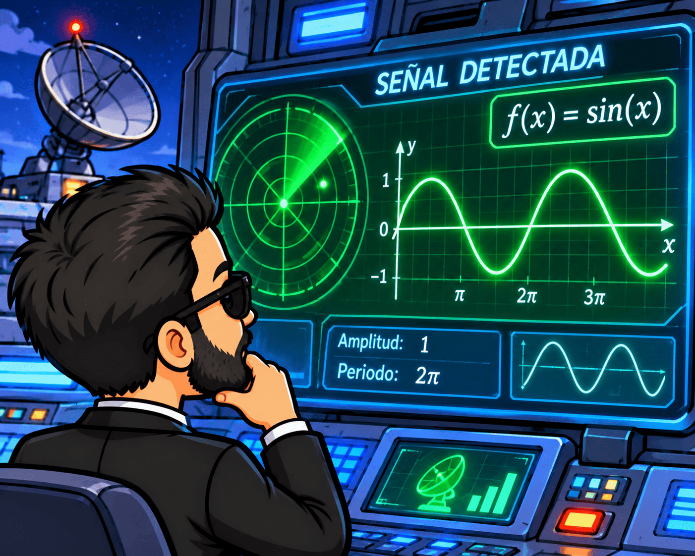
Resolución
- Dominio: \(\mathbb R\).
- Recorrido: \([-1,1]\).
- Periodo: \(2\pi\).
- Es impar.
- \(\text{sen}(0)=0\) y \(\text{sen}(\pi/2)=1\).
Representación gráfica:

Actividad 31. Comparación de seno, coseno y tangente (funciones trigonométricas)
Completa:
| Función | Recorrido | Período |
| \(f(x)=\text{sen} (x)\) | ||
| \(g(x)=\cos (x)\) | ||
| \(h(x)=\text{tg} (x)\) |
Resolución
Las funciones seno y coseno oscilan entre -1 y 1. La tangente puede tomar cualquier valor real y presenta discontinuidades en \(x=\pi/2+k\pi\), con \(k\in\mathbb Z\).
| Función | Recorrido | Período |
| \(f(x)=\text{sen} (x)\) | \([-1,1]\) | \(2\pi\) |
| \(g(x)=\cos (x)\) | \([-1,1]\) | \(2\pi\) |
| \(h(x)=\text{tg} (x)\) | \(\mathbb R\) | \(\pi\) |
Actividad 32. La frontera de los territorios alienígenas (funciones definidas a trozos)
Los MIB han detectado una señal que cambia de comportamiento al llegar a \(x=1\):
\[ f(x)= \begin{cases} x+1 & \text{si }x<1\\ 3 & \text{si }x\geq1 \end{cases} \]
Cuestiones
- Calcula \(f(0)\), \(f(1)\) y \(f(3)\).
- ¿Cuál es el dominio?
- ¿Cuál es el recorrido?
- ¿Es continua en \(x=1\)?
- ¿Dónde crece y dónde es constante?
Resolución
- \[ f(0)=1,\quad f(1)=3,\quad f(3)=3 \]
- Dominio: \(\mathbb R\).
- Recorrido: \((-\infty,2)\cup\{3\}\).
- No es continua en \(x=1\), porque el límite por la izquierda es 2 y por la derecha es 3.
- Es creciente en \((-\infty,1)\) y constante en \([1,+\infty)\).
Representación gráfica:
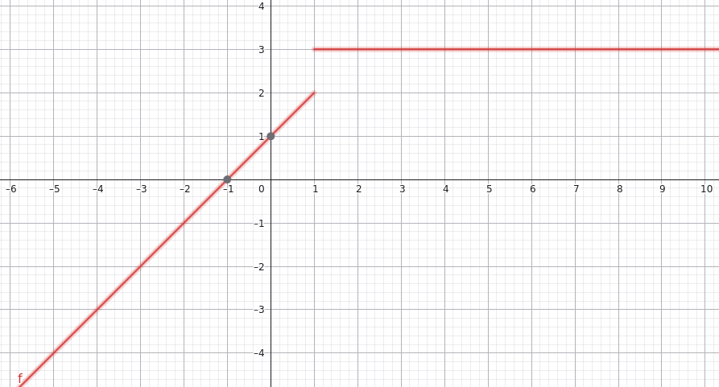
Actividad 33. El arma matemática definitiva: valor absoluto (funciones definidas a trozos)
La función valor absoluto permite calcular la distancia de un número al cero, sin importar si es positivo o negativo.
\[ f(x)=|x|= \begin{cases} -x & \text{si }x<0\\ x & \text{si }x\geq0 \end{cases} \]
Cuestiones
- Calcula \(f(-3)\), \(f(-1)\), \(f(0)\), \(f(2)\) y \(f(4)\).
- Representa la función.
- Indica el dominio y el recorrido.
- Estudia su continuidad.
- Indica sus intervalos de crecimiento y decrecimiento.
- ¿Tiene máximo o mínimo?
- ¿Es par o impar?
- ¿Tiene función inversa?
Resolución
1. Valores:
\[ f(-3)=3,\quad f(-1)=1,\quad f(0)=0 \]
\[ f(2)=2,\quad f(4)=4 \]
2. La gráfica tiene forma de V y vértice en (0,0).
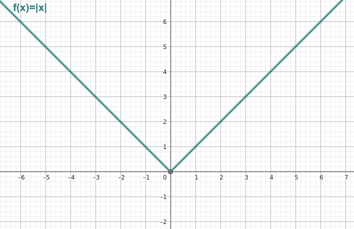
3. Dominio:
\[ D_f=\mathbb R \]
Recorrido:
\[ \operatorname{Rec}(f)=[0,+\infty) \]
4. Es continua en todo \(\mathbb R\).
5. Es decreciente en \((-\infty,0)\) y creciente en \((0,+\infty)\).
6. Tiene un mínimo absoluto de valor 0 en \(x=0\). No tiene máximo absoluto.
7. Es par, ya que \(f(-x)=f(x)\).
8. No tiene inversa en todo su dominio, porque no es inyectiva. Por ejemplo:
\( f(-2)=f(2)=2 \)
Actividad 34. Comparación de funciones a trozos
Compara:
\( f(x)=|x| \)
y
\( g(x)= \begin{cases} -x+2 & \text{si }x<0\\ x+2 & \text{si }x\geq0 \end{cases} \)
Cuestiones
- ¿Qué tienen en común?
- ¿En qué se diferencian?
- ¿Cuál es el vértice de cada gráfica?
- ¿Qué relación existe entre ambas?
Resolución
1. Sus similitudes: Ambas son funciones definidas a trozos y tienen forma de V.
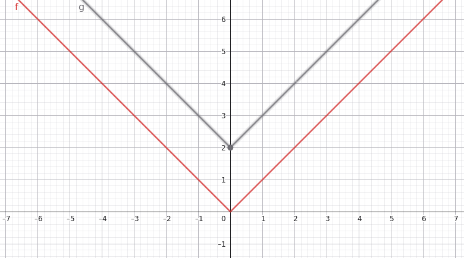
2. Sus diferencias:
La segunda se obtiene desplazando la primera dos unidades hacia arriba:
\( g(x)=|x|+2 \)
3. Por tanto, sus vértices son:
\(f\): (0,0).
\(g\): (0,2).
4. Son la misma gráfica solo que una desplazada respecto de otra 2 unidades (en el eje y).
Actividad 35. Clasificación de señales extraterrestres
Clasifica las siguientes funciones:
a) \(f(x)=3x-2\)
b) \(g(x)=x^2+1\)
c) \(h(x)=\dfrac{2}{x+1}\)
d) \(p(x)=\sqrt{x+3}\)
e) \(q(x)=2^x\)
f) \(r(x)=\log_3x\)
g) \(s(x)=\cos (x)\)
h) \(v(x)=|x|\)
Resolución
| Función | Familia |
| \(3x-2\) | Polinómica, afín. |
| \(x^2+1\) | Polinómica, cuadrática. |
| \(2/(x+1)\) | Racional. |
| \(\sqrt{x+3}\) | Irracional. |
| \(2^x\) | Exponencial. |
| \(\log_3x\) | Logarítmica. |
| \(\cos (x)\) | Trigonomética, coseno. |
| \(|x|\) | Definida a trozos, valor absoluto. |
Actividad 36. Informe final de análisis
Analiza completamente la función:
\( f(x)= \begin{cases} -x & \text{si }x<0\\ x^2 & \text{si }x\geq0 \end{cases} \)
Resolución
- Dominio: \(\mathbb R\).
- Recorrido: \([0,+\infty)\).
- Corte con ambos ejes: (0,0).
- Continuidad: continua en todo \(\mathbb R\), pues ambos límites laterales en cero valen cero y coinciden con \(f(0)\).
- Monotonía: decreciente en \((-\infty,0)\) y creciente en \((0,+\infty)\).
- Extremos: mínimo absoluto de valor 0 en \(x=0\).
- Simetría: no es par ni impar.
- Periodicidad: no es periódica.
- Inversa: no tiene inversa en todo su dominio porque no es inyectiva. Por ejemplo, \(f(-1)=f(1)=1\).
- TVM entre \(x=-1\) y \(x=2\): \[ f(-1)=1,\qquad f(2)=4 \] \[ TVM=\frac{4-1}{2-(-1)}=\frac33=1 \]
- Representación gráfica:
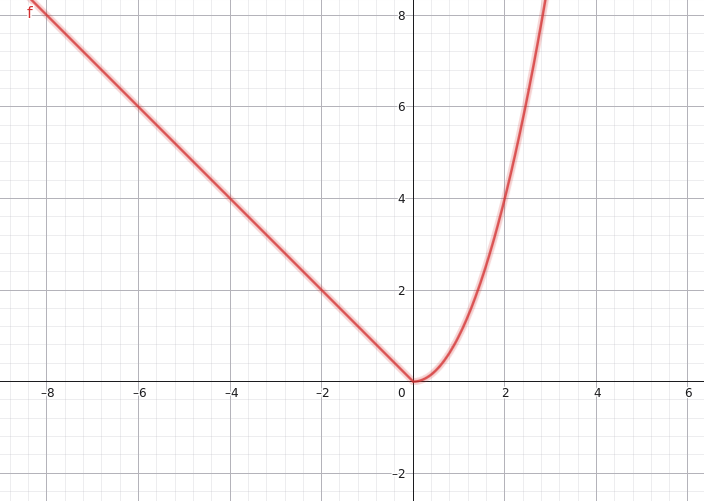
FASE 5. APLICAR
En esta fase, vosotros, los alumnos, como agentes deberéis demostrar que domináis las herramientas matemáticas y sois capaces de comunicar vuestros descubrimientos.
Actividad 37. Manual de supervivencia matemática: la infografía audiodescrita
Misión
Los MIB necesitan elaborar un manual visual de consulta rápida para formar a los futuros agentes. Cada alumno o alumna deberá crear una infografía resumen sobre el tema de funciones, acompañada de una audiodescripción.
La infografía debe permitir que otro agente comprenda los contenidos fundamentales sin tener que consultar el libro de texto.
¿Qué debe incluir la infografía?
- Un resumen del contenido teórico del tema:
- Concepto de función: qué es una función y cómo se representa.
- Características principales: dominio, recorrido, cortes con los ejes, continuidad, crecimiento y decrecimiento, máximos y mínimos, simetría, periodicidad, función inversa y TVM.
- Familias de funciones: polinómicas, racionales, irracionales, exponenciales, logarítmicas, trigonométricas y definidas a trozos.
- Fórmulas y propiedades: las expresiones matemáticas más importantes de cada familia.
- Representaciones gráficas: incluir gráficas que permitan reconocer los principales tipos de funciones.
- Concepto de función: qué es una función y cómo se representa.
- Ejercicio resuelto: elegir libremente un ejercicio del tema, escribir su enunciado y mostrar su resolución paso a paso.
Condiciones del producto
- La infografía debe ser clara, ordenada y visualmente comprensible.
- Debe incluir vocabulario matemático correcto y fórmulas bien escritas.
- Se pueden utilizar ilustraciones, personajes y referencias al universo extraterrestre de la situación de aprendizaje.
- El ejercicio resuelto debe estar explicado y no limitarse a mostrar el resultado.
- Debe acompañarse de una audiodescripción.
- ¿Qué es la audiodescripción?
- La audiodescripción será una grabación de audio en la que el alumno o alumna explique cómo está organizada la infografía y describa sus elementos visuales para que una persona que no pueda verla pueda comprenderla.
- No se trata de leer literalmente todos los textos de la infografía. Se debe explicar:
- Cómo está organizada.
- Dónde se encuentran sus diferentes apartados.
- Qué representan las gráficas, tablas y fórmulas.
- Por qué se han seleccionado esos contenidos.
- Qué relación tienen con el tema estudiado.
- Por qué se ha elegido ese ejercicio y qué permite demostrar.
- ¿Qué es la audiodescripción?
Importante: el alumnado deberá justificar sus decisiones matemáticas y explicar por qué ha incluido cada contenido. No basta con leer la infografía en voz alta.
Actividad 38. Operación MIB: juego de agentes
Los agentes participarán en un juego matemático por equipos diseñado para poner a prueba sus conocimientos sobre funciones.
A través de diferentes retos, tendrán que colaborar, interpretar información, resolver cuestiones matemáticas y demostrar que son capaces de identificar y analizar las señales extraterrestres.
El objetivo será superar las pruebas y conseguir que el equipo MIB mantenga el control de la situación.
Las reglas, pruebas y puntuación del juego serán comunicadas por el docente antes de comenzar.
Actividad 39. Simulacro de examen: protocolo de emergencia
Antes de la evaluación final, se realizará un simulacro de examen con ejercicios relacionados con los contenidos trabajados.
Servirá para comprobar el grado de preparación individual, detectar posibles dificultades y practicar la resolución de problemas en condiciones similares a las de una prueba escrita.
El simulacro permitirá identificar qué contenidos necesitan un último repaso antes de la evaluación.
El simulacro será diseñado y facilitado por el docente.
FASE 6. CONCLUIR/EVALUAR
Actividad 40. El día de la revelación: la humanidad debe conocer la verdad
Después de semanas investigando las señales extraterrestres, los MIB han conseguido descifrar los mensajes. La humanidad está preparada para conocer la verdad: detrás de todos los fenómenos estudiados había patrones matemáticos que podían explicarse mediante funciones.
La información ya no puede permanecer oculta. Ha llegado el momento de compartir los descubrimientos.
Inspirándonos en la temática de El día de la revelación, el alumnado participará en una última misión: entregar su manual matemático para que pueda ser utilizado por cualquier persona que necesite comprender las funciones.
Entrega del producto final
Cada agente deberá entregar:
La infografía resumen del tema.
El ejercicio elegido, resuelto y explicado dentro de la infografía.
La audiodescripción correspondiente.
Defensa de la infografía
El alumnado deberá explicar brevemente las decisiones que ha tomado:
- ¿Por qué ha seleccionado esos contenidos?
- ¿Qué criterios ha seguido para organizar la información?
- ¿Por qué ha elegido ese ejercicio?
- ¿Qué conceptos matemáticos demuestra el ejercicio?
- ¿Qué parte del tema considera más importante para comprender las funciones?
No se trata de leer la infografía, sino de justificar su contenido y demostrar que se ha comprendido.
Evaluación final: examen teórico
Para finalizar la situación de aprendizaje, se realizará un examen individual del contenido teórico del tema.
Se evaluará el conocimiento de los conceptos, las definiciones, las propiedades y las características de las distintas familias de funciones.
El alumnado deberá demostrar que comprende:
- Qué es una función y sus diferentes representaciones.
- Dominio y recorrido.
- Cortes con los ejes.
- Continuidad y discontinuidades.
- Crecimiento y decrecimiento.
- Máximos y mínimos.
- Simetría y periodicidad.
- Función inversa.
- Tasa de variación media.
- Características de las funciones polinómicas, racionales, irracionales, exponenciales, logarítmicas, trigonométricas y definidas a trozos.
Mensaje final de los MIB
AGENTES, habéis conseguido descifrar las señales, interpretar las gráficas y reconocer los patrones matemáticos que amenazaban con confundir a la humanidad.
Recordad: el universo puede ser enorme, extraño e impredecible, pero las matemáticas nos proporcionan herramientas para comprenderlo.
La Tierra está a salvo. La misión ha concluido.
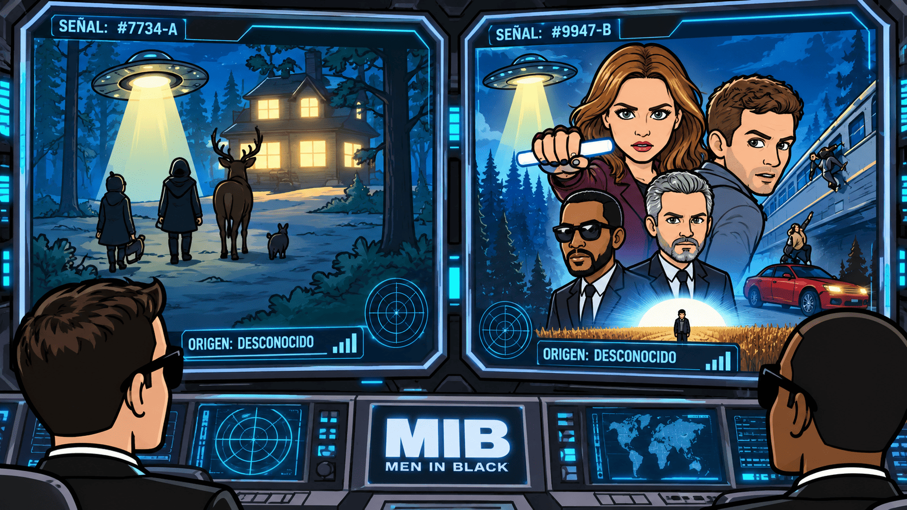